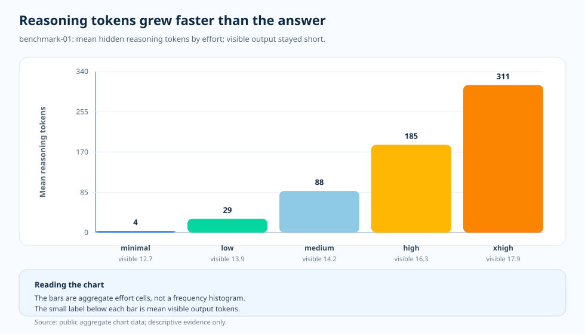

주제 글 · 숨어 있는 과금 표면
보이지 않는 추론 토큰: 답변에 드러나지 않는 청구서의 일부
짧은 사실형 응답을 다룬 이번 실행은 답변만 읽으면 지극히 평범해 보였습니다. 대부분의 응답은 짧았습니다. 그런데 청구서는 전혀 다른 이야기를 들려줍니다. 추론 모델은 눈에 보이는 텍스트를 내놓기 전에 모델 내부에서 토큰을 소비할 수 있기 때문입니다. 이 내부 토큰은 사용자에게 노출되지 않지만, 측정하는 사용량 영역에는 분명히 포함됩니다.

질문
답변 텍스트가 짧게 유지되었다면, 추가 비용은 도대체 어디에서 나온 것일까요?
근거
benchmark-01의 토큰 구성·비용·지연 시간 차트를 하나의 근거 사슬로 이어서 읽습니다.
발견
눈에 보이는 답변 길이는 거의 움직이지 않았지만, 숨은 추론 토큰은 추론 강도 사다리를 따라 늘어났습니다.
결정
보이는 답변이 짧더라도 추론 토큰을 텔레메트리에서 추적합니다. 숨은 토큰 예산을 응답이 끝내 보여 주지 않는 청구서의 일부로 다룹니다.

짧은 답변, 짧지 않은 내부 작업
benchmark-01에서 정작 흥미로운 지점은 매우 높은 강도(xhigh)가 더 비쌌다는 사실이 아닙니다. 그건 예상된 일입니다. 진짜 흥미로운 점은 그 증가분이 최종 답변에는 거의 드러나지 않았다는 데 있습니다. 이 단면에서 최소 강도(minimal)는 평균적으로 보이는 출력 12.7 토큰과 추론 토큰 3.655172를 기록했습니다. 매우 높은 강도는 보이는 출력 17.9 토큰과 추론 토큰 311.474576을 기록했습니다.
다시 말해 독자가 보는 텍스트는 실제로 구매한 연산량을 가늠하기에는 형편없는 대용물입니다. 짧은 답변이 큰 추론 예산을 감출 수 있고, 그럴듯한 답변이라 해도 짝지은 품질 차트가 움직이지 않는다면 경제적으로는 나쁜 거래일 수 있습니다.
차트를 읽는 법
막대는 개별 요청의 히스토그램이 아니라 강도별로 묶은 집계 셀입니다. X축은 추론 강도 설정이고, Y축은 요청당 평균 추론 토큰입니다. 각 막대 아래의 작은 라벨은 같은 셀의 평균 보이는 출력 토큰 수를 알려 줍니다.
차트는 아래에서 위로 읽습니다. 먼저 청구서를 설명할 만큼 보이는 출력이 변했는지 묻고, 그다음 숨은 추론 막대와 비교합니다. 이 단면에서 설명의 열쇠는 답변 길이가 아니라 내부 작업입니다.
원천 차트가 더해 주는 것
토큰 구성은 메커니즘을 설명하지만, 그것만으로는 충분하지 않습니다. 비용 차트는 청구서가 불어나는 모습을 보여 주고, 품질 차트는 그 청구서가 더 나은 답변을 사 왔는지 묻습니다. 지연 시간 차트는 사용자가 체감하는 대기 시간을 보여 줍니다. 이 셋을 함께 놓으면 숨은 영역이 비로소 읽힙니다. 이 짧은 사실형 단면에서는 내부 토큰이 더 많아지고 지출도 늘고 지연 시간도 길어졌지만, 그에 걸맞은 품질 상승은 없었습니다.
기억할 요점
교훈은 추론 토큰이 나쁘다는 것이 아닙니다. 그 토큰이야말로 추론 모델의 존재 이유입니다. 교훈은 그 토큰에 맡길 일이 있어야 한다는 것입니다. 과제가 짧은 사실형 답변만 필요로 한다면, 내부 추론은 조용한 예산 누수가 될 수 있습니다. 반대로 과제가 여러 단계의 해결을 요구한다면, 바로 그 토큰이 품질 향상을 벌어다 주는 핵심일 수 있습니다.
개요 글이 비용·품질·지연 시간·토큰 구성을 한자리에 묶어 두는 이유가 여기에 있습니다. 청구서는 답변 안에 온전히 드러나지 않습니다.
근거 표
docs/blog/data/chart-data/token-composition/benchmark-01/tokens.json에서
나오며,
근거 대시보드에서
읽으세요
(제공되는 차트 데이터).

| 근거 항목 | 측정값 A | 측정값 B | 더해 주는 것 |
|---|---|---|---|
| 최소 강도 | 보이는 출력 12.7 토큰 | 추론 토큰 3.655172 | 짧은 답변, 아주 작은 숨은 예산입니다. |
| 매우 높은 강도 | 보이는 출력 17.9 토큰 | 추론 토큰 311.474576 | 텍스트는 여전히 짧지만, 내부 예산은 훨씬 큽니다. |
| 짝지은 품질 | 최소 강도 1.87931 | 매우 높은 강도 1.779661 | 이 단면에서 숨은 작업은 품질 상승을 사 오지 못했습니다. |
| 지연 시간 | 최소 강도 약 1.1초 | 매우 높은 강도 약 3.1초 | 숨은 작업은 대기 시간까지 늘렸습니다. |
출처와 근거 경계
위의 모든 수치는 이 저장소의 공개 산출물로 추적되며, 모든 비용 수치는 날짜가 박힌 가격 스냅샷을 기준으로 계산됩니다. 추론 토큰 예산을 텔레메트리에서 보이게 유지해야 한다는 회계 습관은 이 글 자체의 운영적 해석입니다. 아래 두 계층은 문서화된 입력이 끝나고 추론이 시작되는 경계를 표시합니다.
- Tier 1 — 방법론 계약: 이 저장소,
docs/05-methodology.md(v1.0). 셀당 N = 20 작성 표본, R = 3 반복, 공개 집계 단면만 해당합니다. 차트 해석 본문은 이 고정된 입장을 전제하며, 오차 막대는 신뢰 구간이 아니라 표준편차이고, N = 20에서 p-값은 주장하지 않습니다. - Tier 1 — PAYG 가격 스냅샷: 요청당 비용 관점은 이 저장소의
pricing/azure-openai-payg-2026-05.yaml를 기준으로 가격을 매깁니다. 접근일: 2026-05-19; 출처 URL: https://azure.microsoft.com/en-us/pricing/details/azure-openai/; 아카이브 URL: https://web.archive.org/web/20260519042011/https://azure.microsoft.com/en-us/pricing/details/azure-openai/. 정가가 움직이면 숨은 토큰 청구서도 달라집니다. - Tier 2 — benchmark-01 단면 측정: 이 저장소,
benchmarks/01-short-factual/analysis.json. 3.655172에서 311.474576으로의 추론 토큰 변화, 12.7에서 17.9로의 보이는 출력 이동, 1.87931에서 1.779661로의 평균 평가 점수, 약 1.1초에서 약 3.1초로의 지연 시간 확대의 출처입니다. - Tier 2 — 렌더링된 차트 데이터: 이 저장소,
docs/blog/data/chart-data/token-composition/benchmark-01/tokens.json이 토큰 분해의 출처입니다.docs/blog/data/chart-data/cost-curves-effort/benchmark-01/cost-per-request.json,quality.json,latency.json과 함께 읽으면, 숨은 토큰이 그에 맞는 품질 상승 없이 청구서와 대기 시간을 함께 키웠다는 근거가 됩니다. - 근거 대시보드: 렌더링된 benchmark-01 토큰 구성 차트는 같은 산출물을 감사할 수 있는 형태입니다.
이 단면이 증명하는 것과 증명하지 못하는 것: 이 짧은 사실형 단면에서는 강도 사다리를 따라 내부 추론이 늘어나는 동안 보이는 출력은 거의 움직이지 않았음을 보여 줍니다. 같은 숨은 토큰 형태가 다단계, 도구 에이전트, 종합 작업에서도 나타난다는 것은 증명하지 못합니다. 각 주제는 자신의 측정을 따로 가집니다.
근거로 말할 수 있는 것
이 단면은 숨은 추론 토큰이 청구서와 대기 시간을 키웠지만 그에 맞는 품질 상승은 없었음을 보여 주며, 시리즈에 ‘청구서는 답변에 온전히 드러나지 않는다’는 기준점을 더합니다.
실무 규칙
- 추론 토큰을 총 토큰만이 아니라 요청별로 보이는 출력 옆에 함께 기록하세요.
- 짧은 답변도 큰 내부 비용을 품을 수 있으니, 숨은 토큰 예산에 알림을 거세요.
- 이 워크로드 형태에서 짝지은 품질 차트가 움직인 뒤에만 더 높은 강도를 승격하세요.
실무 규칙: 보이는 답변이 짧더라도 추론 토큰을 텔레메트리에서 측정하세요 — 숨은 토큰 예산이 바로 응답이 보여 주지 않는 청구서의 일부입니다.
다음: 다단계 작업: 추론이 시험해 볼 가치를 얻을 때 — 추가 추론은 언제 더 큰 청구서가 아니라 품질 향상을 사 올까요?